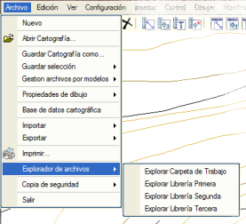
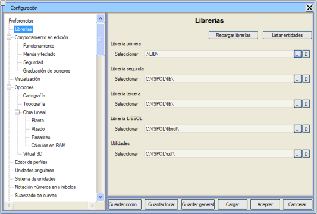

| |
|
KÜTÜPHANELER
|
ISTRAM®/ISPOL®'ün grafik nesneleri (çizgiler, semboller, metinler ve hücreler) .edm dosyalarında ilişkili tiplerini tanımlı olarak bulundurur, ancak karşılık gelen gösterimi içermez. Bu gösterim, her biri bir tipi tanımlayan bir dizi dosya içeren bir klasör olan KÜTÜPHANE'de yer alır. Böylece, çizgileri temsil etmek için L# serisi, noktalar için S#, metinler için R# ve hücreler için C# serisi bulunur; burada #, metinler hariç (numarası 999 ile sınırlıdır) 0'dan 9999'a kadar bir sayıdır. Bu dosyalar, bir sembole, bir çizgiye veya bir metne bağlı olarak yürütülmesi gereken özellikleri ve komutları tanımlar ve kendi tipindeki bir nesne çizimde mevcut olduğunda yürütülecek tüm grafik gösterimi içerir. Kütüphanede, yukarıdakilere ek olarak, normatif tablolar, güzergah projesi eksenlerinin çizim modları, yapılandırma dosyaları gibi çeşitli işlemlerde ISTRAM®/ISPOL®'ün durumunu veya davranışını etkileyen yapılandırma dosyaları da bulunur. ISTRAM®/ISPOL®, "dağıtılmış" bir kütüphane veya istenirse, hiyerarşik bir arama sırasına göre birden fazla kütüphane kullanımını destekler. Böylece, başlatma sırasında her kütüphane için varsayılan olarak aşağıdaki yollar veya "path"ler ayarlanır:
Sonuncusu temel kütüphanedir. Her yeni ISTRAM®/ISPOL® revizyonuyla birlikte gelir ve programın otomatik olarak yönettiği tüm semboloji taleplerini karşılar. İkincisi genel kullanıcı kütüphanesidir ve birincisi her projenin özel kütüphanesidir, çünkü her çalışma klasöründe bir tane olabilir (./lib/ çalışma klasörünün bir alt klasörüne atıfta bulunur). ISTRAM®/ISPOL®, ihtiyaç duyduğu kütüphane nesnelerini önce birincil kütüphane olan ./lib'de arar, orada bulamadığını ikincil veya genel kullanıcı kütüphanesi olan /ISPOL/libuser/'da arar ve son olarak /ISPOL/lib'de (üçüncül veya temel kütüphane) arar. Yerel ve kullanıcı kütüphanesi boş klasörler olabilir veya hiç var olmayabilir. Bununla birlikte, ISTRAM®/ISPOL®'ü en azından bir ikincil veya kullanıcı kütüphanesi olmadan kullanmak tavsiye edilmez; böylece kendi değişikliklerini temel kütüphaneyi etkilemeden toplayabilir. Daha da iyisi, istenen kütüphane nesnelerini diğer projeleri etkilemeden yerel olarak değiştirmeye olanak tanıyan bir yerel proje kütüphanesine sahip olmaktır.
Dosya → Dosya Gezgini menüsünden, Windows® Dosya Gezgini aracılığıyla farklı kütüphanelere ve mevcut çalışma klasörüne doğrudan erişim sağlanır. 
Kütüphane Yapılandırması Kütüphanelerin varsayılan işleyişini Yapılandırma → Tercihler → Kütüphaneler menüsü aracılığıyla değiştirmek mümkündür, bu menü aşağıdaki iletişim kutusunu açar: 
Buradan kütüphanelerin hiyerarşisini değiştirebilir, başkalarını seçebilir vb. işlemler yapabilir, ayrıca [Nesneleri Listele] butonu ile tüm grafik nesnelerin bir listesini alabilirsiniz. Yapılandırma dosyalarında başka bir şey tanımlanmadığı sürece, ISTRAM varsayılan olarak yerel kütüphane olarak çalışma klasörünün altında bulunan lib alt klasörünü kullanır. Eğer bu klasör mevcut değilse, ISTRAM başlatılırken oluşturur. [V] butonu, her durumda programın varsayılan olarak kabul ettiği kütüphaneyi yeniden atar. Eğer o kütüphanenin varsayılan konumu mevcut değilse, butona basıldıktan sonra program başka bir konum sorar. ISSOL kütüphanesi (varsayılan olarak \ispol\libsol\), VIRTUAL 3D modülü tarafından kullanılır ve Yardımcı Programlar yolu ile ilgili olarak, program tarafından dosya içe/dışa aktarma için kullanılan çeşitli format dönüştürücülerinin nerede saklandığı belirtilir. Özetle:
|